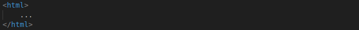
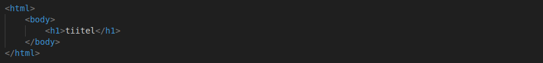

Mis on HTML?
HTML on tavaline programmeerimise keel millega saab luua veebilehti. HTML-i kasutatakse, et luua veebilehe vundamendi, andes veebilehtedele struktuuri.
HTML loomise programmid
HTML-i saab luua isegi tavalises tekstiprogrammis kuigi professionaalid kasutavad spetsiifilisi programmeerimis programme, et luua HTML-i.
Notepad++
Visual Studio Code
Subline Text
Atom
jne
HTML element
HTML element on iga veebilehe alguses ja lõppus, mis näitab, et see fail on html keeles ja sellega laeb vundamendi alguse.
Heading element
Heading elementi kasutatakse tiitliteks veebilehtedel. Tavaliselt mida suurem number peale h-i on, seda vähem oluline see on olulisuse hierarhias
Container elemendid
Container elemente kasutatakse, et grupeerida teisi elemente teineteisega. Containeritega saab luua struktuuri sinu HTML failile ja lisada stiili mitmetele elementidele.
Teksti vormindamine
Teksti vormindamise silte kasutatakse teksti loomises ja stiliseerimiseks HTML-is.
Meedia
Meedia on kõik mis on seotud piltide, videote, muusikaga, jne.
Pildid
Videod
Muusika
Lingid
Lingid on elemendid mis saavad sinu ümber suunata teisele veebilehele.
Form
Formi kasutatakse kasutaja sisendi kogumiseks. Tavaliselt kasutaja informatsioon saadetakse serverisse töötlemiseks.